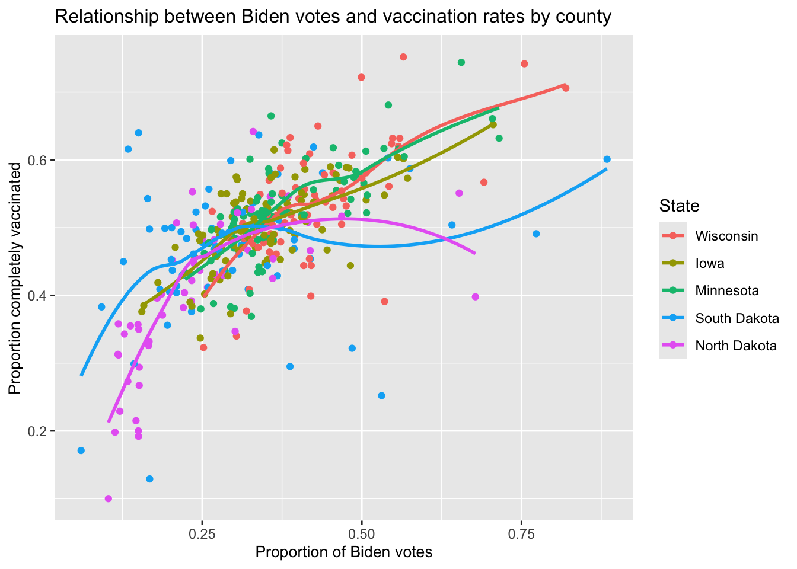

library(tidyverse)── Attaching core tidyverse packages ──────────────────────── tidyverse 2.0.0 ──
✔ dplyr 1.1.4 ✔ readr 2.1.5
✔ forcats 1.0.0 ✔ stringr 1.5.1
✔ ggplot2 3.5.1 ✔ tibble 3.2.1
✔ lubridate 1.9.3 ✔ tidyr 1.3.1
✔ purrr 1.0.2
── Conflicts ────────────────────────────────────────── tidyverse_conflicts() ──
✖ dplyr::filter() masks stats::filter()
✖ dplyr::lag() masks stats::lag()
ℹ Use the conflicted package (<http://conflicted.r-lib.org/>) to force all conflicts to become errorsvaccine_data <- read_csv("https://proback.github.io/264_fall_2024/Data/vaccinations_2021.csv")Rows: 3053 Columns: 14
── Column specification ────────────────────────────────────────────────────────
Delimiter: ","
chr (4): state, county, region, metro_status
dbl (10): rural_urban_code, perc_complete_vac, tot_pop, votes_Trump, votes_B...
ℹ Use `spec()` to retrieve the full column specification for this data.
ℹ Specify the column types or set `show_col_types = FALSE` to quiet this message.vaccine_data |>
filter(state %in% c("Minnesota",
"Iowa",
"Wisconsin",
"North Dakota",
"South Dakota")
) |>
mutate(state_ordered = fct_reorder2(state, perc_Biden, perc_complete_vac),
prop_Biden = perc_Biden / 100,
prop_complete_vac = perc_complete_vac / 100) |>
ggplot(mapping = aes(x = prop_Biden,
y = prop_complete_vac,
color = state_ordered)
) +
geom_point() +
geom_smooth(se = FALSE) +
labs(color = "State",
x = "Proportion of Biden votes",
y = "Proportion completely vaccinated",
title = "Relationship between Biden votes and vaccination rates by county") +
theme(axis.title = element_text(size = 10),
plot.title = element_text(size = 12)) `geom_smooth()` using method = 'loess' and formula = 'y ~ x'